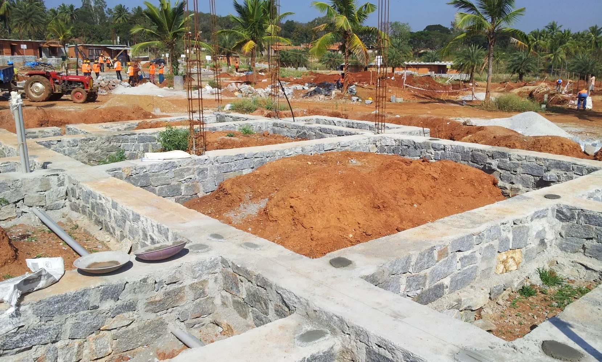
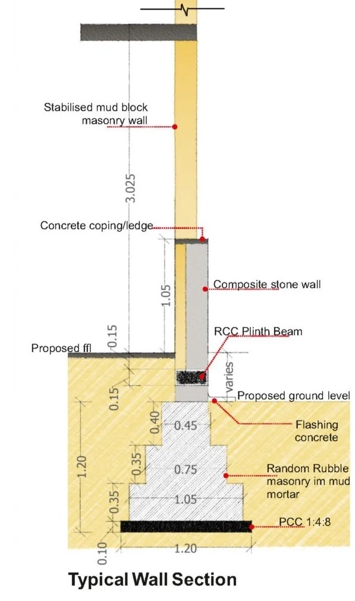
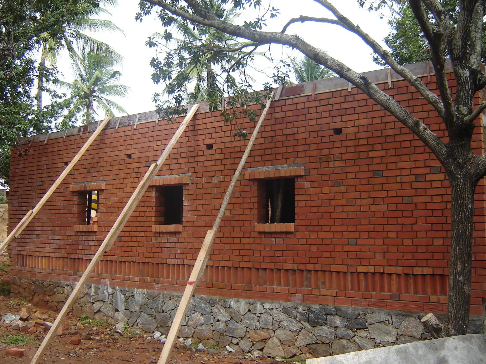
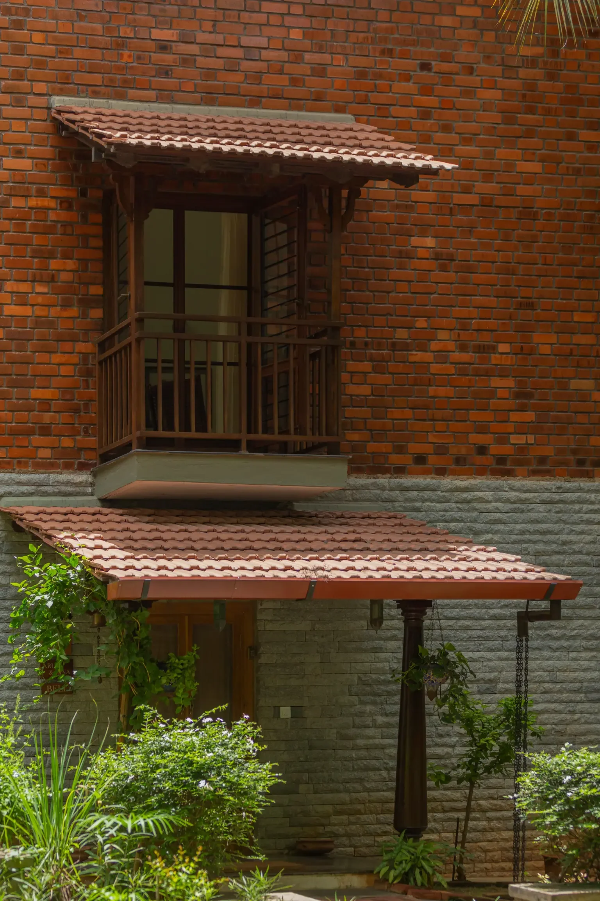
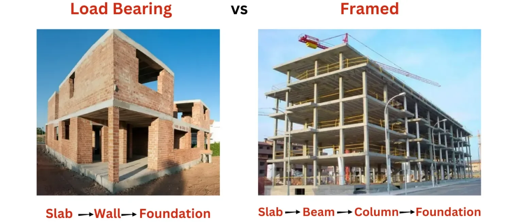
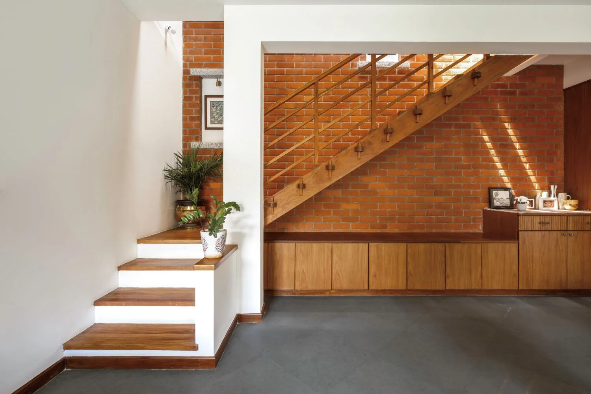

In the conventional construction landscape, the prevalent practice for long has been to prioritise convenience and expedience, often at the expense of sustainability. This has typically manifested in the widespread use of reinforced concrete structures, characterised by their reliance on energy-intensive materials such as concrete and steel.
However, amidst growing global concern over climate change and environmental degradation, there’s a pressing need to reevaluate these entrenched norms. The construction industry, as a significant contributor to carbon emissions and resource depletion, stands at the forefront of this paradigm shift.
Concrete and its Environmental Challenges
Cement production, a key ingredient in concrete, accounts for approximately 8% of global CO2 emissions, making it a significant contributor to climate change.
The manufacturing process for concrete demands vast amounts of raw materials. For example limestone and clay, the extraction of which can lead to habitat loss and a decline in biodiversity.
The energy-intensive nature of cement production adds to the overall environmental impact of concrete.
Concrete manufacturing produces waste materials like dust and sludge. These can contribute to air and water pollution.
In response to this imperative, let us look at the holistic approach adopted by GoodEarth from the ground up, which redefines the term “eco-friendly” by integrating time-tested methods with modern conventions, thus achieving a balance where one can have the best of both worlds while reducing their carbon footprint.
Solid foundations
Minimising concrete, maximising local resources
The foundation serves as the bedrock upon which environmental responsibility is built. At GoodEarth, our approach to foundation construction blends traditional materials with modern techniques to minimise our environmental footprint while ensuring structural integrity.
By combining locally-sourced random rubble stones with strategic Reinforced Cement Concrete (RCC) reinforcements, we have achieved a significant reduction in cement consumption, resulting in a remarkable decrease in the overall carbon footprint of foundation construction. This approach not only minimises transportation emissions but also harnesses the sustainability of natural resources, such as indigenous stone.
Moreover, our foundation design prioritises seismic stability by incorporating a plinth beam, serving as a precautionary measure against seismic events. The strategic integration of concrete ensures a sound foundation with low embodied energy while optimising resource allocation and maintaining structural stability. This ensures that our buildings stand strong while minimising their environmental footprint.


Load-bearing structures: Efficiency & authenticity

The load-bearing structure stands as one of the oldest and most prevalent construction types, known for its enduring reliability. In this structural system, the weight of roofs, along with lateral forces like wind and seismic activity, are carried by walls. These forces are then transmitted through the walls to the lower floors and eventually to the foundation. This structural approach is also referred to as a wall-bearing structure, as the masonry walls-constructed from materials such as brick, stone, or AAC blocks-support the entirety of the building.
These structures are ideally suited for buildings up to two storeys high, making them perfectly adequate for the spans involved in the cluster houses and townhouses at Malhar Eco-Village.

Compared to framed structures with concrete columns and beams, load-bearing construction inherently reduces the reliance on energy-intensive materials such as cement and steel. By distributing the building’s weight through the walls, this approach minimises the need for additional structural elements, aligning seamlessly with our community’s architectural style and environmental goals.
Additionally, it allows us to utilise locally sourced stones for construction, while the stabilised mud blocks are crafted from earth excavated on-site. These earth blocks not only boast a lower environmental footprint but also contribute to the promotion of local economies and sustainable practices.

Image source: https://dailycivil.com/difference-between-load-bearing-structure-and-framed-structure/

If you want to know more about the role of Compressed Stabilised Earth Blocks (CSEBs) in our construction,
Read blogReduced energy costs
GoodEarth’s sustainable construction practices offer practical benefits for the residents as well. The thick masonry walls and efficient building envelope design work in tandem to minimise energy demands for heating and cooling, thereby, reducing energy costs compared to conventional framed structures.
Improved indoor comfort
In addition to cost savings, our focus on sustainability enhances the comfort and well-being of our residents. The thermal mass of the masonry walls, combined with effective ventilation strategies, creates a consistently comfortable indoor environment. By promoting natural airflow and temperature regulation, we reduce the need for mechanical cooling systems, further enhancing indoor comfort and resident satisfaction.

GoodEarth’s approach to foundation and superstructure demonstrates how sustainable construction can be achieved without compromising on liveability, resilience, and aesthetic appeal. This holistic approach serves as a valuable model for future eco-development initiatives, highlighting the potential to create built environments that are not only environmentally responsible but also enhance the overall quality of life for their residents.